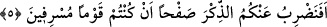

ve aynı sayıda kalp levhine de nazar etmektedir. Artık orada dilediğini siler, dilediğini
yazıp korur. Buradaki günden maksad gelecek gün olup Allah katında bin yıl olarak
yayılmış olan gündür. Senenin günlerinin sayısıyla buna işâret edilmiştir. Bunu iyi
anlamalısın.
Mademki kalp Allah’ın levhidir, öyleyse kul kalpten masivâyı silmeli ve kalbi onun
şânına yaraşır biçimde tezyîn etmelidir. Çünkü kalp nazargâh-ı ilâhîdir. Bazı büyükler
şöyle demiştir: Kişinin meyli şehvet, sûret ve insanlara olursa bu kişi insanlar
tarafından iltifat ve itibar edilen elbiseler giyip dışını süslemekle meşgul olur. Şâyet
meyli sevgiye, hakka ve hakîkate olursa bu kişi de Allah katında muteber olan şeylerle
iç âlemini ve gönül dünyasını süslemekle meşgul olur. Dış yöne pek iltifat etmez.
Bilakis ne olursa olsun kendisini soğuk ve sıcaktan koruyacak basit ve mütevâzi
şeylerle yetinir.
Bazı büyükler şöyle demiştir: Gece gündüz Allah’ın kitabı Kur’an’la meşgul olmak
seni hürler makamına ulaştırır. Çünkü Allah’ın zikrine götüren her şey hasta kalplerin
ilacıdır. Zîrâ kalbî hastalıkların en büyüğü Allah’ı unutmaktır. Allah Teâlâ şöyle
buyuruyor “Allah’ı unuttuklarından dolayı Allah’ın da onlara kendi canlarını
unutturduğu kimseler gibi olmayın” (el-Haşr, 59/19) Şüphesiz bir hastalığın ilacı
onun tam zıddı olan şeydir. Dolayısıyla unutmanın ilacı da Allah’ı zikretmektir. Nitekim
âyet-i kerimede “öyleyse beni anın ki ben de sizi anayım” (el-Bakara, 2/152)
buyrulmaktadır.
Şâir şöyle der:
Kalbin, Allah’ı gösteren bir aynadır,
O halde aynanın yüzü niçin karanlık?
Cilâ ile parlatırsan aynan parlak bir hâle gelir.
Eğer bilmiyorsan söyleyeyim;
Cila “Lâ ilâhe illallah”tan başka bir şey değildir.”
5. Siz, haddi aşan kimseler oldunuz diye, sizi Kur’an’la uyarmaktan vaz mı
geçelim?
“Siz,” mâsiyetler işleyip “haddi aşan” ve bunda ısrar eden “kimseler oldunuz diye,
sizi Kur’an’la uyarmaktan vaz mı geçelim?”
Kur’ân’ın şânının yüceliğini açıkladıktan ve Kurân’ın onların diliyle indirilmesinin de
onu anlamaları, ona inanmaları ve gereğiyle amel etmeleri için olduğunu beyandan
sonra Yüce Allah işin bu anlatılanın aksine olmasını reddederek gerçeği haber vermekte
ve şöyle buyurmaktadır: “Sizi Kur’an’la uyarmaktan vaz mı geçelim?” Mânâ şudur: